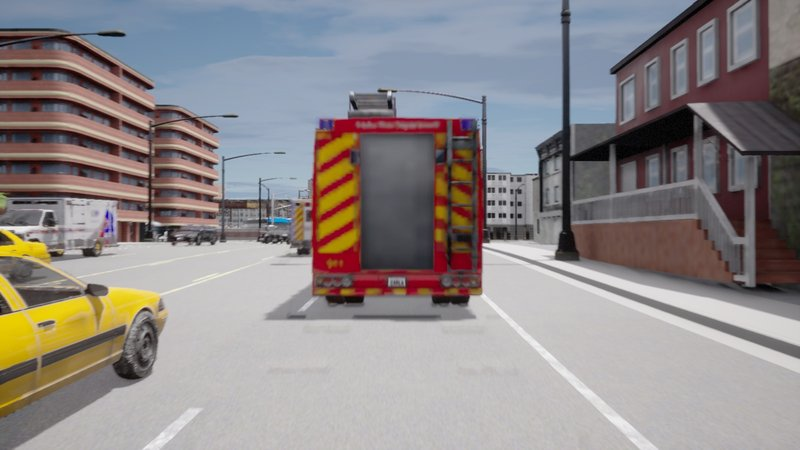
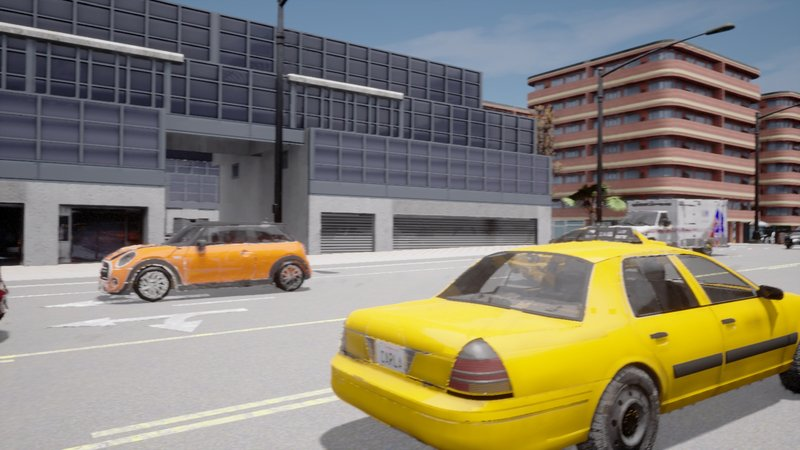
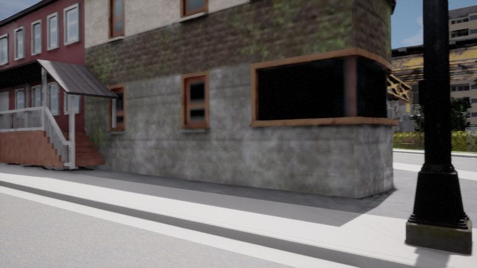
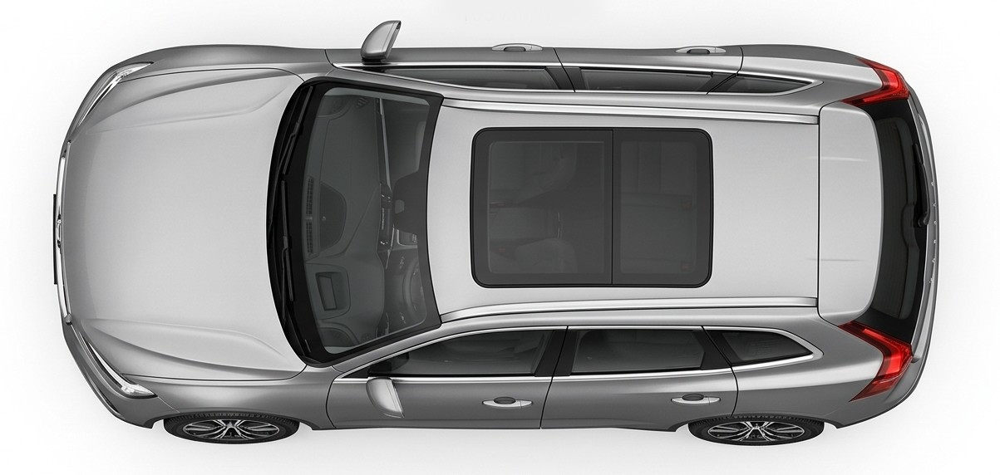
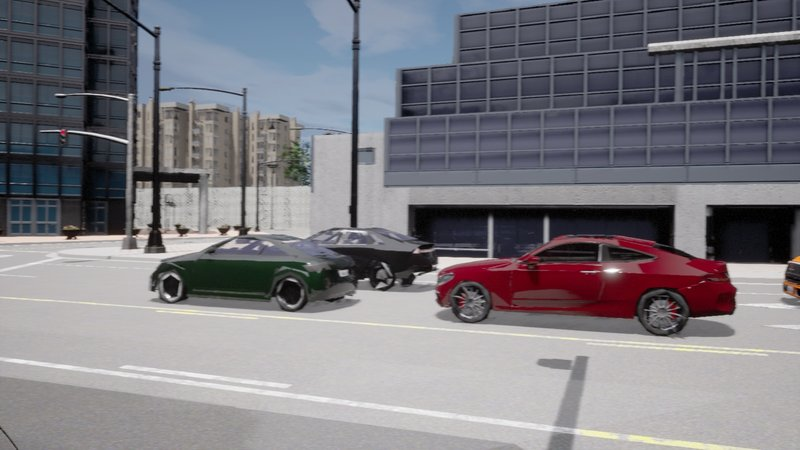
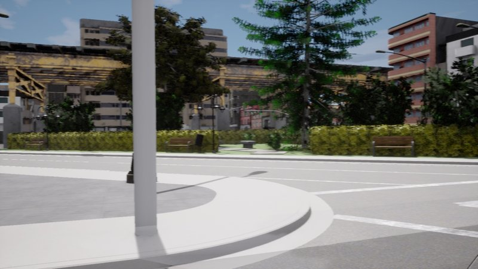
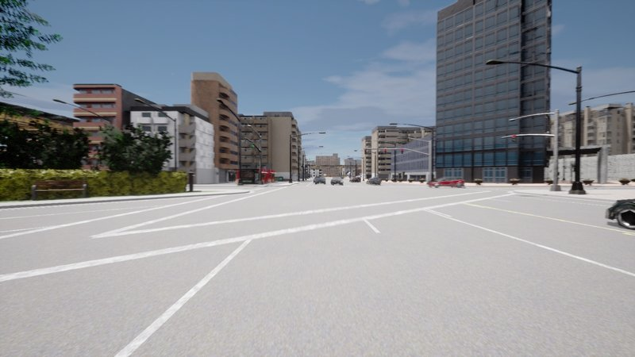

SCAR-Crash
Scenarios
5-Way Signalised Intersection Collision
Two vehicles collide at a five-way signalised intersection, with 30 background traffic vehicles.
Open Interactive Viewer4-Way Unsignalised Intersection Collision
Two vehicles collide at the four-way unsignalised intersection, with 30 background traffic vehicles.
Open Interactive ViewerDisabled Vehicle Rear-End Collision
A stationary vehicle broke down on the road and was hit by a truck, with 28 background traffic vehicles.
Open Interactive ViewerRed-Light Runner Hits Left-Turning Vehicle
A vehicle runs a red light and collides with another vehicle making a left turn across its path at a signalised intersection, with 17 background vehicles.
Open Interactive ViewerData Format
Cameras
6× RGB cameras (front, front-left, front-right, back, back-left, back-right), 1600×900, record every 1 second







LiDAR
360-degree view top-mounted LiDAR, record every 1 second
Calibration
Per-frame calibration (.pkl): the vehicle's world pose, all 6 camera intrinsics, all 6 LiDAR-to-camera extrinsics, and the LiDAR-to-vehicle mount transform